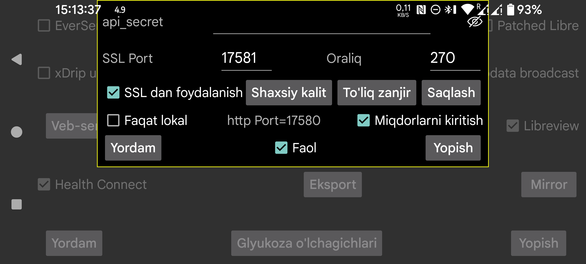

ar be de es fr hi nl pl ru sv tr uk uz zh en
Juggluco ichida boshqa ilovalar glyukoza qiymatlarini qabul qila oladigan veb server mavjud. Undan xDrip soatlari va ayrim Nightscout ilovalari bilan foydalanish mumkin.
xDrip veb serveri bilan ishlashga mo‘ljallangan ilovalar uchun sozlash nisbatan oson: Faol ni yoqing. Shundan keyin ular 127.0.0.1 va 17580 portidan glyukozani oladi. Nightscout server URL odatda http://127.0.0.1:17580 bo‘ladi.
Ayrim Nightscout kuzatuvchi ilovalari ham undan foydalana oladi. Masalan xDrip, Diabox, Windows uchun Suzuvchi glyukoza ilovasi va Windows/Linux/macOS uchun Owlet widget’i, agar Faqat lokal yoqilmagan bo‘lsa, oddiy http bilan ishlaydi. macOS’da Nightscout Menu Bar, Gluco Status va Gluco Tracker ham shunday ishlaydi. iOS’dagi Nightscouter, LoopFollow va Nightguard uchun ham ko‘pincha faqat http kifoya qiladi.
Agar Juggluco ga internet orqali kirishni istasangiz, modemingizda port forwarding sozlashingiz kerak bo‘ladi. Bu haqda quyidagi manzillarda ma’lumot bor:
Ba’zi Nightscout kuzatuvchi ilovalari faqat https bilan ishlaydi. Buning uchun Juggluco ga domen nomi uchun tasdiqlangan SSL kaliti kerak bo‘ladi. Agar tashqi IP manzilingizga bog‘langan hostname bo‘lsa, Certbot orqali bepul sertifikat olish mumkin.
Agar tashqi IP ga hostname biriktirilmagan bo‘lsa, bundan foydalana olmaysiz. Bepul domenni Freenom kabi xizmatlardan olish mumkin, lekin bunday domenlar barqaror bo‘lmasligi mumkin; pullik domen ko‘pincha ishonchliroq bo‘ladi.
Certbot o‘rnatilib, modemdagi 80-port kompyuteringizga yo‘naltirilgandan so‘ng, quyidagi buyruqni ishlatish mumkin:
certbot certonly --standalone --preferred-challenges http -d myhostname
Shundan keyin private key odatda /etc/letsencrypt/live/myhostname/privkey.pem, full chain esa /etc/letsencrypt/live/myhostname/fullchain.pem faylida bo‘ladi.
Agar SSL authority dan kalit fayllarini olgan bo‘lsangiz, ularni Juggluco ga berishingiz kerak: private key uchun Shaxsiy kalit, full chain uchun To‘liq zanjir tugmasi ishlatiladi.
Agar sizga faqat bir Android qurilmadan boshqasiga glyukoza yuborish kerak bo‘lsa, veb server o‘rniga Juggluco ning Mirror funksiyasidan foydalanish osonroq bo‘ladi.
SSL kerak bo‘ladigan ilovalar: AAPS, Diabetes:M, Nightwatch, Checkmate, Sugarmate (macOS va iOS), Xdrip4ios, Shuggah va Cockpit (iOS). Bunday holatda Nightscout server URL sifatida https://hostname:port ko‘rsatiladi. Bu yerda hostname — Juggluco ga berilgan autentifikatsiyalangan kalitning domen nomi, port esa shu ekranda ko‘rsatilgan va modem orqali yo‘naltirilgan port (standart 17581).
AAPS ni Juggluco 7.3.0 va undan yuqori versiyalarda ishlatish mumkin. AAPS ichida NSClientV3 ni tanlang va quyidagicha sozlang:
api_secret ni ishlating;Oldin kiritilgan miqdorlardan oldingi vaqtga yangi miqdor qo‘shish AAPS da duplicate treatment lar hosil qilishi mumkin. V3 interfeysi Juggluco dan V3 yuklamalarini oladigan Nightscout server bilan ishlatilganda ham shunday bo‘lishi mumkin. Ba’zan AAPS treatments so‘rashni faqat force stop qilinib qayta ishga tushirilgandan keyin boshlaydi.
Veb server Linux kompyuterda ham ishga tushirilishi mumkin. U o‘z ma’lumotini sensorga ulangan Juggluco dan keladigan mirror ulanishi orqali oladi: https://www.juggluco.nl/Juggluco/cmdline.
Boshqa telefon bu serverga mirror ulanishi yoki Nightscout kuzatuvchisi sifatida ulanishi mumkin, masalan iPhone. Agar biror Nightscout ilovasi bu server bilan ishlamasa, muallifga xabar berish tavsiya etiladi — ehtimol kichik o‘zgarishlar bilan moslashtirish mumkin bo‘ladi.
api_secret: follower ilovalar api_secret HTTP sarlavhasini shu qiymatga teng qilib yuborishi kerak. Bu secret Nightscout tokeni sifatida ham ishlaydi yoki SHA1 bilan kodlangan secret sarlavhasi ko‘rinishida ham ishlashi mumkin. Juggluco 7.1.15 dan boshlab api_secret ni Nightscout server URL yo‘lining birinchi elementi sifatida ham ishlatish mumkin. Masalan secret xyz bo‘lsa, http://hostname:port/xyz kabi.
Ko‘rinadi: secret ni ko‘rinadigan qiladi.
Port: https server bilan aloqa uchun ishlatiladigan tarmoq porti. Standart qiymat 17581.
Saqlash: secret yoki port o‘zgarishini saqlaydi.
SSL dan foydalanish: SSL (https) ishlatadi. Buning uchun Shaxsiy kalit va To‘liq zanjir ko‘rsatilishi kerak.
Shaxsiy kalit: private key saqlangan faylni tanlash.
To‘liq zanjir: full chain saqlangan faylni tanlash.
Oraliq: glyukoza qiymatlari orasidagi standart minimal interval (soniyalarda). Odatda bu 270 soniya. So‘rovda interval= parametri bilan bu qiymat o‘zgartirilishi mumkin.
Faqat lokal: http server faqat localhost (127.0.0.1) orqali ochiladi. Bu https ga taalluqli emas.
Miqdorlarni yuborish: kiritilgan miqdorlarni http://127.0.0.1:17580/api/v1/treatments?count=3 orqali olish imkonini beradi. Buning uchun har bir yorliq bilan nima qilish kerakligini ko‘rsatish zarur. Shu interfeys orqali xDrip Juggluco dan miqdorlarni olishi mumkin.
xDrip’da buning ikki usuli bor:
http://127.0.0.1:17580 yozish va Download Treatments ni yoqish;http://somekey@127.0.0.1:17580/api/v1/ yozish va Download treatments ni yoqish.Ikkinchi usulda Juggluco ga ma’lumot upload qilib bo‘lmaydi; faqat treatment lar yuklab olinadi va ayrim xato xabarlari ko‘rinishi mumkin.
Agar Faqat lokal o‘chirilgan bo‘lsa, Juggluco ishlayotgan telefonning uy tarmog‘i IP manzili va modemdagi port forwarding yordamida tashqi IP orqali ham foydalanish mumkin. Agar Juggluco ga hostname uchun Shaxsiy kalit va To‘liq zanjir berilgan va SSL dan foydalanish yoqilgan bo‘lsa, shu hostname va bu yerda ko‘rsatilgan port bilan https orqali ham kirish mumkin.
Agar treatments’ni Diabetes:M ga yuklamoqchi bo‘lsangiz, ikki yo‘l bor: ma’lumotni Libreview’ga yuborib, u yerdan import qilish; yoki telefonning tashqi hostname’i uchun autentifikatsiyalangan kalit olib, external source sifatida Nightscout ni tanlash va URL ga https://yourhostname:Port ko‘rsatish. Bu avtomatik sinxronlashni doim qilmasligi mumkin, shuning uchun ba’zan Diabetes:M ichida qo‘lda Sinx bosish kerak bo‘ladi.
Faol: veb server ishlayapti.
Juggluco amalga oshirgan Nightscout/xDrip veb server buyruqlari haqida batafsil: https://www.juggluco.nl/Juggluco/webserver.html.